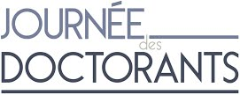
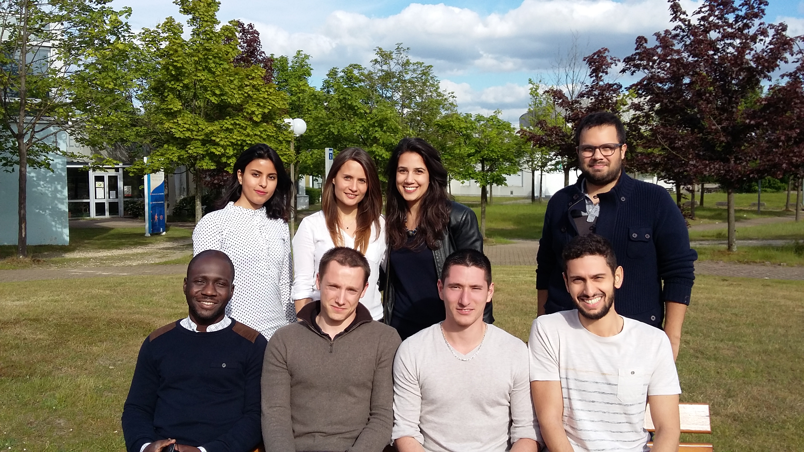

<section id="greeting" class="wrapper  special" style="text-align: justify;  text-justify: inter-word;">
  <div class="inner mediumwidth">
    <header class="major">
  <p >
    <strong>Historiquement</strong>, cet évènement était organisé chaque année par l’association 
    <strong><a href="{{site.url}}/">ADDED</a></strong> (<em>Association des 
      Doctorants et Docteurs des Ecoles Doctorales PSIME 
    et MIIS sur les sites universitaires de Rouen et le Havre</em>) avec le soutien 
    financier de l’ancienne Ecole Doctorale <strong>SPMII</strong> de Haute-Normandie. Elle se 
    déroulait sur une journée et à tour de rôle sur le site Saint-Etienne du 
    Rouvray, Technopole du Madrillet, Université de Rouen Normandie, et le site 
    de l'Université du Havre. Ainsi, les archives que vous trouverez sur ce 
    site sont les archives des précédentes JDD organisées par l'ADDED pour les 
    doctorants de l'ancienne Ecole Doctorale SPMII.
  </p>
  <p>
    L’association <strong><a href="http://assoc-optic.fr/?lang=fr">OPTIC
    </a></strong> (<em>Organisation Pour les DocTorants Interdisciplinaires 
    de Caen</em>), qui regroupe les Doctorants des Ecoles Doctorales PSIME et MIIS 
    précédemment citées, mais également <em>NBISE</em> (<em>Biologie Intégrative, Santé, 
    Environnement</em>), organisait également une journée similaire deux fois par 
    an. Elle se déroulait sur le site de Caen pour les Doctorants de l’ancienne 
    <strong>Ecole Doctorale SIMEM </strong>(répartit dans l'Université de 
    Caen et son antenne à Cherbourg). 
  </p>
  <p >
    La grande <strong>nouveauté</strong> de l'année 2017 est de <strong>réunir 
    les deux nouvelles Ecoles 
    Doctorales PSIME et MIIS</strong>, ainsi que les quatre sites de 
    répartition des 
    Doctorants (<strong>Rouen-Caen-Le Havre-Cherbourg</strong>) au sein d’un seul et même 
    évènement se déroulant sur <strong>deux jours</strong> : <em>Les Journées des Doctorants de 
    PSIME & MIIS</em>. Cette unification relève de la fusion et dissociation des 
    Ecoles Doctorales SPMII et SIMEM (liée à la création de la ComUE Normandie 
    Université), qui a donné naissance aux Ecoles Doctorales régionales PSIME 
    et MIIS aux thématiques bien distinctes.
  </p>
  <p >
    Les Journées Des Doctorants sont <strong>organisées par les associations 
      <a href="{{site.url}}/">ADDED</a> et 
    <a href="http://assoc-optic.fr/?lang=fr">OPTIC</a></strong> et 
    parrainées par les Écoles Doctorales PSIME et MIIS.
  </p>
  <p >
    A l’instar des années précédentes l’évènement sera reconduit chaque année 
    à tour de rôle sur les différents sites universitaires.
  </p>
  <p >
    Cet évènement donne l’opportunité à tous les doctorants de présenter leurs 
    travaux de manière pédagogique par <strong>communications orales et/ou posters.
      </strong>
    Une <strong>table ronde</strong>, ou un <strong>mini-forum</strong>
     sont également organisés, sur le thème 
    de l'insertion professionnelle, permettant un échange avec des industriels, 
    chercheurs, post-docs... Pour faire mieux connaissance et agrémenter ces 
    journées, un <strong>cocktail</strong> est proposé à la fin de la première journée. 
    La seconde journée marquera la fin de l’évènement au cours duquel 
    <strong> un prix poster et quatre prix oraux seront décernés </strong> dans les 
      quatre grandes 
    disciplines des Ecoles Doctorales (Mathématiques – Physique – Sciences 
    pour l’ingénieur – Sciences et Techniques de l’information et de la 
    Communication).
  </p>
  <p >
    Les années précédentes le prix poster était d'une valeur d'environ 100€, 
    et les prix oraux de 200€ chacun, pour une présence de plus de 1/3 de 
    l'effectif de l'ED SPMII. Nous attendons une fréquentation similaire des 
    Doctorants de deux ED PSIME et MIIS.
  </p>
  <p >
    Cette occasion se présente comme <strong>un excellent exercice de vulgarisation </strong>
    devant un publique scientifique mais non expert, pouvant ainsi être 
    valorisé sur un CV ou au cours d'un entretient.
  </p>
  <p >
    Un appel à communications, accompagné d'un descriptif du déroulement de 
    cette journée, est généralement envoyé autour des mois de Janvier-Février 
    précédent l’évènement via les listes de diffusion des Ecoles Doctorales. 
    Un planning détaillé vous est également transmis une fois que les 
    inscriptions sont clôturées.
  </p>
  <p >
    Chaque année la JDD est <strong>organisée pour et par les doctorants volontaires </strong>
    via l'association ADDED. Si vous souhaitez organiser cet évènement avec 
    d'autres doctorants des Écoles Doctorales PSIME/MIIS, n'hésitez pas à nous 
    contacter (<a href="{{site.url}}/contact-{{page.lang}}/">contact</a>).
  </p>
  <h1 style="color: black; text-align: left">Histoire</h1>
  <ul>
    <li> <a href="{{site.url}}/jdd2017-{{page.lang}}/">2017.</a></li>
    <li> <a href="https://sites.google.com/site/jddspmii2016/">2016.</a></li>
    <li><a href="https://sites.google.com/site/jddspmii/">2015.</a></li>
  </ul>
  <p>
    <h1 style="color: black; text-align: left">Les comités d'organisation</h1>
    <div class="2u" ><span class="image fit"></span></div>
    <div class="box alt">
      <div class="row uniform 50%">
        <div class="4u"><span class="image fit">
          <figure>
            <a href="../images/jdd/2017-rouen.jpg">
          
          </a>
          <figcaption><h1 style="color: black">2017 - Rouen. <br> 
            <a href="https://drive.google.com/drive/folders/0ByYVNAWsGuQrQXFxdHFZOEhXUms?usp=sharing">Archive d'images</a></h1></figcaption>
          </figure>
        </span>
      </div>
        <div class="4u"><span class="image fit">
          <figure>
            <a href="../images/jdd/2016-le-havre.JPG">
          
          </a>
          <figcaption><h1 style="color: black">2016 - Rouen. <br> 
            <a href="https://drive.google.com/drive/folders/0B0e5-CpCGTNXRGV3b2ppLTFaRnc?usp=sharing">Archive d'images</a></h1></figcaption>
          </figure>
        </span>
      </div>
        <div class="4u"><span class="image fit">
          <figure>
            <a href="../images/jdd/2015-rouen.jpg">
          
          </a>
          <figcaption><h1 style="color: black">2015 - Rouen. <br>
            <a href="https://drive.google.com/drive/folders/0B0e5-CpCGTNXYUlZSXppRUJJR0U?usp=sharing">
            Archive d'images</a>
          </h1></figcaption>
          </figure>
        </span></div>
      </div>
    </div>
  </p>
</header>

</div>
</section>
